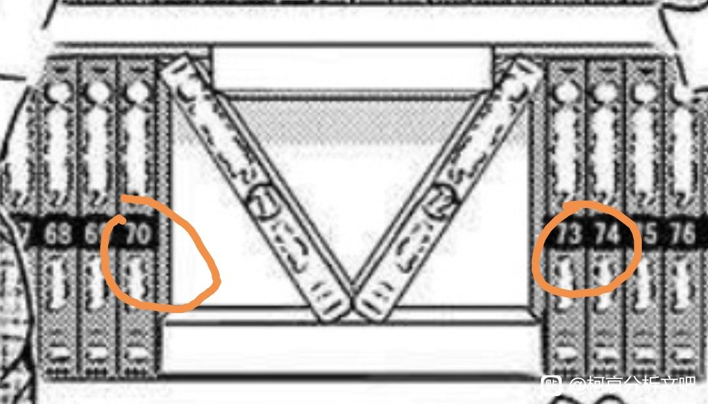

看到箭头的时候就隐隐约约有所预感，没想到回去一翻还真是啊。
左右两个数字是70和73
那么中间俩数字就是71和72，然后这俩卷指的是刚好是伦敦篇
所以伦敦篇确实是极为重要的篇章，而且也至少说明了73剧情人物的刻画里非常满意的两卷
希望最后胜利的人真的是眼镜小姐
左右两个数字是70和73
那么中间俩数字就是71和72，然后这俩卷指的是刚好是伦敦篇
所以伦敦篇确实是极为重要的篇章，而且也至少说明了73剧情人物的刻画里非常满意的两卷
希望最后胜利的人真的是眼镜小姐


2023-10-31 11:15 | neon年年:借楼，可能不止感情线哈，主线也是有可能的，比如boss在伦敦啊、布局的人里有小哀等等2023-12-04 02:19 | 贴吧用户_aEtt4CJ:回复 neon年年 :挺希望红茶会议是哀布局的（好像没说柯南知不知道红茶会？）
卧槽
还有高手？
6
顯微鏡價格要被你們炒起來了
细
鸡皮疙瘩起来了，莫非刚子他真是天才……
细啊，从72卷开始，形势逆转了
卧槽，每次看分析文都能让我卧槽
真的是直呼卧槽，太强了！
太细了太细了
太厉害了
还有高手
分析文吧人均神人

万物起源伦敦篇
这种“难不成……"的细节确认的醍醐味
闻到血腥味紧咬住不放的鲨鱼，确实贴切啊
这种“难不成……"的细节确认的醍醐味
闻到血腥味紧咬住不放的鲨鱼，确实贴切啊
哀门
等下！文吧會不會太強？！這也能發現？根本人均列文虎克，只是隔壁又要說我們最愛腦補了
难道他真的是天才
卧槽
难他天
这是本周看到的最强分析了
又有高手？
果然还埋了别的东西
感觉家长会篇也能多挖一挖
难他天？！
6
刚圣
伦敦篇的AR扫出来这个嘿嘿 还得是眼镜小姐
还得是眼镜小姐
还得是眼镜小姐
居然有这样的剧情吗？
好好好好好好
6
卧槽了，难道他天
啊？难他天
什么叫万物起源啊（笑）
伦敦篇，又是伦敦篇，神了
不愧是万物起源
NB
柯南本南看到这里也自叹不如
太多巧合就只能说是故意为之了，这么多数字里，刚子偏偏选了71.72，谁再说他不是故意的真说不过去了
伦敦篇写得太神了，73都忍不住自推
2023-10-29 09:30 | 世界上没有真理:騙了很多人他應該很得意2023-10-29 09:30 | 世界上没有真理:騙了很多人他應該很得意2024-01-21 23:14 | SparkFeeling:光从故事上确实写得很好很顺，场外又面壁几乎骗了所有人
文吧真是人均列文虎克
楼主可以看看新的那一篇寻找玛利亚的大胆猜想，关于箭头代表黑桃A，是对柯南感情的隐喻
玛利亚是天才
 这也太强
这也太强神了
难他天
那个透过水杯箭头相反，暗示在水下箭头就反过来了，之前像M15，M19，M24等都是点出哀对柯的箭头，这回下水救完估计柯子真要好好正视这一段感情了
还有东西，每次看分析文都有新收获
列文虎克啊
牛逼水里的箭头反过来了捏
？6
什么意思求解
什么意思求解
WC卧槽卧槽！！！
文吧的各位也和鲨鱼差不多了，这么细的一丝血腥味都被找到了卧槽！cy，难他天？！如果饮水鸟真和新志有关，加上箭头…
啊？
我怎么才看到这个帖子
牛
又是显微镜看漫画的吧友
 omg
omg不把漫画作品全部摆起来按规则排列是看不到这个箭头的。
而要做到这一点，除了巧合之外，那就是怀着对作品的强烈感情了。
而要做到这一点，除了巧合之外，那就是怀着对作品的强烈感情了。
这个书架的意思是有些篇章是要拨开表面来看深层意义，而这个深层意义是体现在作品结构的大故事上面的。 就是那种单元性质小故事，但也含有对主线有大影响的深层信息。 要注意这些信息才能理解作品。
这个玛丽亚故事是导读+剧透，我在写详细解析不过有点懒而且这个其实是可以容纳作品几乎所有层面的一个作者概况所以可以讲的东西非常多。
这个玛丽亚故事是导读+剧透，我在写详细解析不过有点懒而且这个其实是可以容纳作品几乎所有层面的一个作者概况所以可以讲的东西非常多。
发现了一件事，之前是隐约觉得那几卷我还挺有印象的。这种事能成应该是因为柯南故事结构调整过，轮到那个周期自然而然就会安排那条线。
不止箭头本身，那个箭柱子，也包含了很值得玩味的部分。
不止箭头本身，那个箭柱子，也包含了很值得玩味的部分。
最上面一排箭柱最左侧的14卷，应该是落叶缤纷的质问在的那一卷；
二第二排箭柱最右侧的47卷，应该是疑惑系列在的那一卷。
排除早期阿笠博士解围的一次预演，正是兰怀疑柯南的身份开始，兰怀疑柯南的身份结束。
二第二排箭柱最右侧的47卷，应该是疑惑系列在的那一卷。
排除早期阿笠博士解围的一次预演，正是兰怀疑柯南的身份开始，兰怀疑柯南的身份结束。
14卷的时候，大艾琳有希子临时救场，但是只是缓冲，兰其实越来越确信，最终迎来危命复活；
47卷的时候，柯哀联合用两部手机和邮件把兰骗过去了，自此兰没有再在明面上把柯南身份问题上升到合力攻克的boss局。
换句话说，这是感情线福艾联合大战毛利兰对身份怀疑的始终
47卷的时候，柯哀联合用两部手机和邮件把兰骗过去了，自此兰没有再在明面上把柯南身份问题上升到合力攻克的boss局。
换句话说，这是感情线福艾联合大战毛利兰对身份怀疑的始终
正因为兰不能明面怀疑柯是新了，伦敦篇的局面才成为可能。
第三次boss战，如果是柯单人，那已经被兰困住回不了国了，艾的送药解围奠定胜局
第三次boss战，如果是柯单人，那已经被兰困住回不了国了，艾的送药解围奠定胜局
所以，整个箭头包含了感情线对兰的三次boss战。
而这个周期，恐怕像元素周期表一样有一定规律。也就是说，有预测性。
如果没有调整过，可以发现是30卷为周期，14下面就是44，然后74，104
而这个周期，恐怕像元素周期表一样有一定规律。也就是说，有预测性。
如果没有调整过，可以发现是30卷为周期，14下面就是44，然后74，104
104卷收录的是羽田案吧，而104-107会收录的，是现在连载中的部分，自然包括天空树。
如果按箭头摆好之后，本来81卷的位置变成73了，那就是8卷误差。这个腾出来的部分如果按序填入这个书架，这个箭头会指93（71开始）到102（72结束）。
这里面会有什么，实际检证之前就有预感了，果然是这样这个箭头指的是：红修-寻找玛利亚（对，就是自己）-黑兔亭-红茶会-时间胶囊-“重新配对”（最后一话叫这个…）
如果按箭头摆好之后，本来81卷的位置变成73了，那就是8卷误差。这个腾出来的部分如果按序填入这个书架，这个箭头会指93（71开始）到102（72结束）。
这里面会有什么，实际检证之前就有预感了，果然是这样这个箭头指的是：红修-寻找玛利亚（对，就是自己）-黑兔亭-红茶会-时间胶囊-“重新配对”（最后一话叫这个…）
这么细节